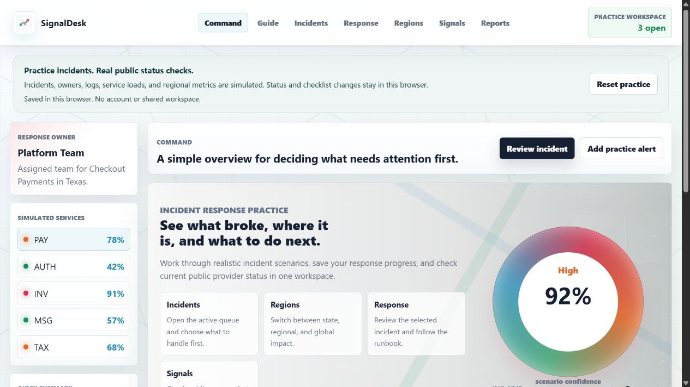

Next.js · Incident practice
SignalDesk
Practice incident triage and response with simulated scenarios. Check real public service status in a separate view.
Next.js · React · TypeScript · Public status APIs
- Choose a scenario
- Follow the runbook
- Review progress

Incident practice
Choose a simulated incident, review its impact and evidence, then update its status and work through a response checklist. Reports summarize the practice queue.
Each scenario includes a service, owner, severity, customer impact, evidence, and a timeline. The response view keeps the status, runbook checklist, and recent activity together.
Public service checks
Server routes check public status reports from GitHub, Vercel, and Cloudflare. Failed or timed-out requests show an unknown state with the last check time.
Provider requests have a timeout. A failed refresh clears an old healthy result and shows unknown status, so the screen does not present a previous success as a current check.
Saved progress
Browser storage keeps status changes, checklists, the selected scenario, and recent activity after a refresh. Reset clears that progress. There are no shared accounts or cross-device sync.
The saved state is validated before it loads. Corrupt or unsupported records fall back to the starting scenarios. If browser storage is unavailable, the interface explains that changes will only last for that visit.
Code and tests
The dashboard uses separate views and state modules. Automated tests cover persistence, invalid stored data, response changes, and failed public-status requests. GitHub Actions runs the tests and production build.
Incident reviews
Reviews use rules applied to the scenario evidence. They suggest practice steps and do not make changes to real infrastructure.
The review route validates the submitted evidence and returns a priority score and recommendation. Review results belong to the selected incident and are cleared when the practice workspace is reset.